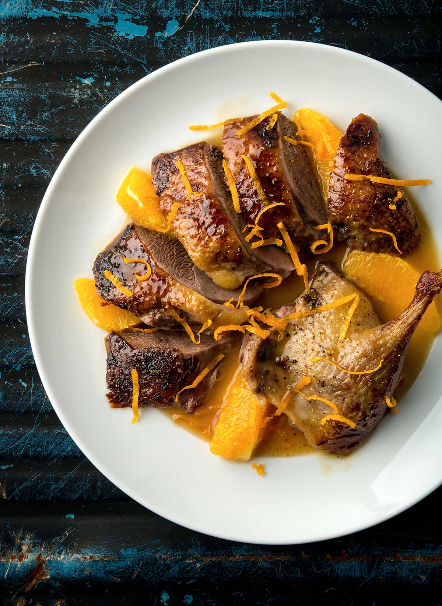

Duck a l'orange

Description
Duck a l'orange is one of those classic dishes that somehow became a cliché, and people stopped making it for fear of looking un-cool, which is too bad, since it's really good. This is traditionally done with a whole roasted duck, but by using duck breasts we get pretty much the same results in a lot less time.
Ingridients
- 2 duck breast halves
- salt to taste
- 1 cup chicken broth
- 2 tablespoons orange liqueur (such as Grand Marnier)
- 1 tablespoon sherry vinegar
- 1 tablespoon Seville orange marmalade, or more to taste
- 2 teaspoons grated orange zest
- 1 pinch cayenne pepper
- 1 tablespoon reserved duck fat
- 1 teaspoon all-purpose flour
- 1 tablespoon butter